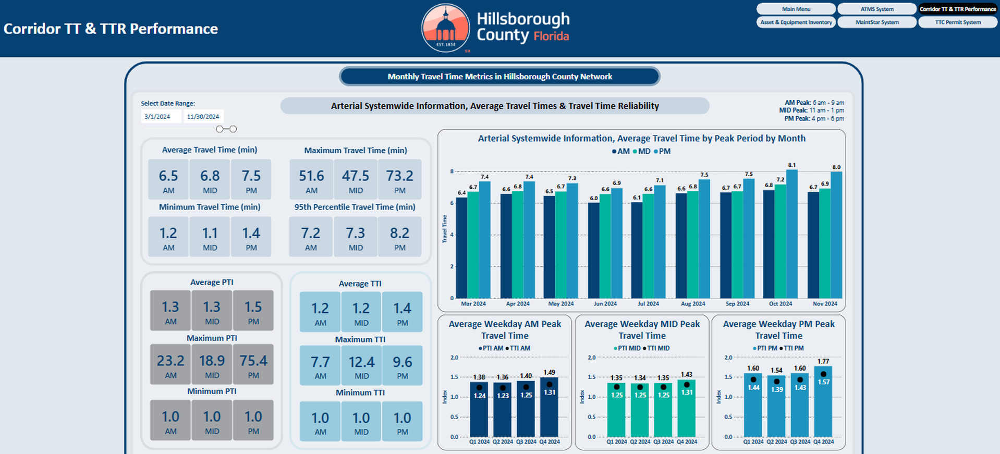
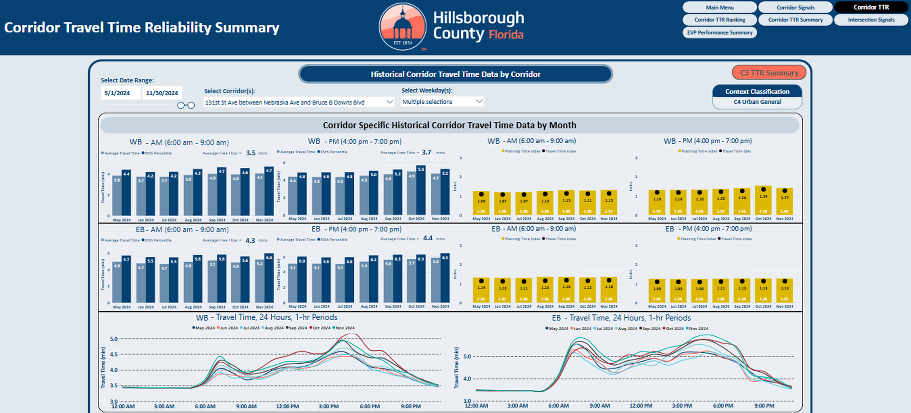
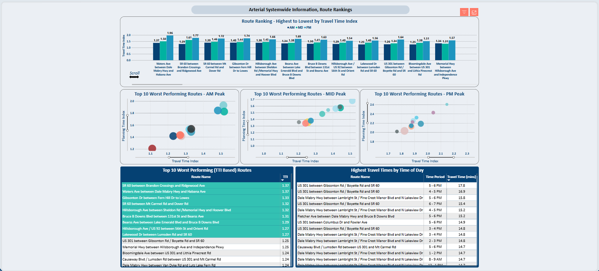
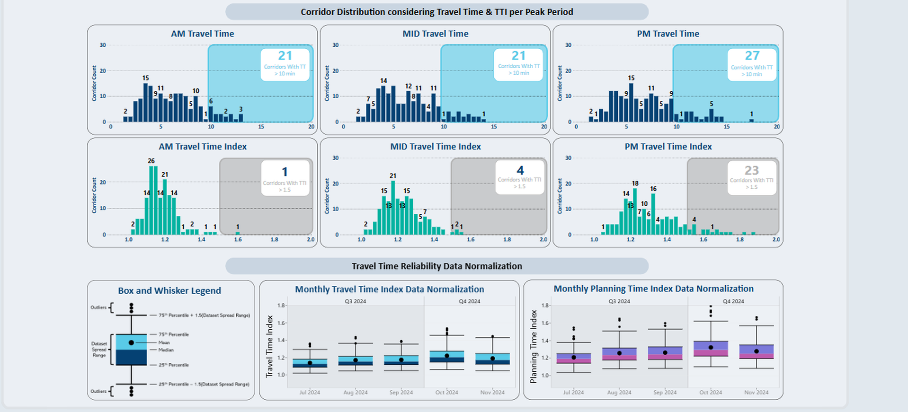
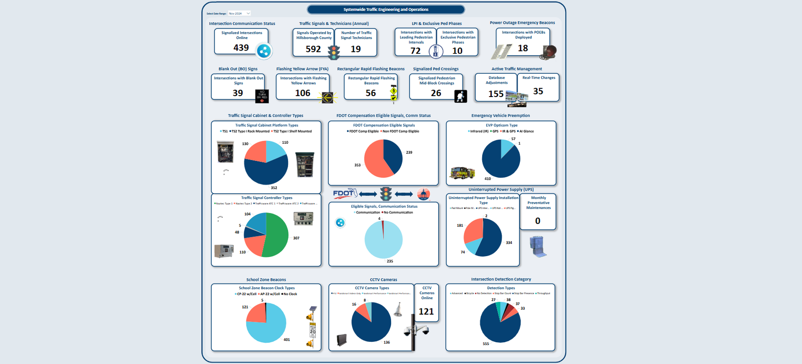
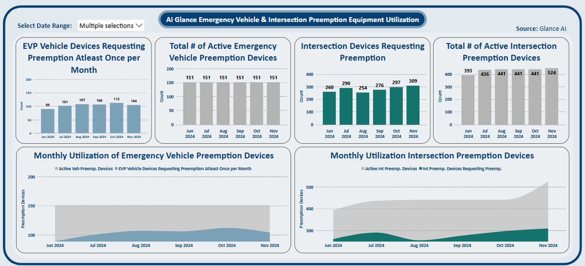

Hillsborough Traffic Operations Dashboard. Countywide signal operations in one report.
A Power BI system for Hillsborough County, Florida, that brings ATMS alarm events, corridor travel times, signal and equipment inventories, and emergency vehicle preemption data together in one report. I designed the whole dashboard, with a partner firm reviewing it and advising on how to tell the story on the pages in their areas of expertise. I also built the ATMS alarms process, which ties every alarm to its intersection and corridor and rolls it up by month, weekday, hour, and fiscal quarter.

At a glance. The scope in numbers.
ATMS alarm events reported from October 2024 to October 2026
Traffic signals operated by Hillsborough County (November 2024)
Power Query queries I built for the alarms process
Tables in the data model, from six data sources
The challenge
Hillsborough County's traffic operations team runs hundreds of signalized intersections, along with the cameras, beacons, detectors, and communication equipment that support them. The data behind that work lived in separate places: the ATMS logs every alarm and status change at each intersection, RITIS holds corridor travel times, an Excel database tracks equipment, and a vendor system records emergency vehicle preemption.
On their own, ATMS alarms are a long list of raw events identified only by an ATMS ID and a timestamp. To be useful, each alarm had to be connected to the corridor it belongs to and summarized over time, so the team could see which corridors produce the most alarms, what kinds of alarms they are, and how that changes from quarter to quarter of the county's fiscal year.
My approach. From raw alarms to corridor rankings.
Collect
Loaded the ATMS alarm log as a Parquet file from Azure Blob Storage, plus the user activity and alarm lists from the county's equipment database and the RITIS corridor list.
- Azure Blob
- Parquet
- Excel
Transform
Cleaned the alarm log and split each timestamp into month, weekday, and hour, then added fiscal year and fiscal quarter columns that start in October.
- Power Query
- M
Connect
Expanded the corridor list so each corridor has one row per ATMS ID. That bridge lets every alarm roll up from its intersection to its corridor.
- Data model
- Relationships
Visualize
Built the ATMS summary with a top 10 corridor ranking, an alarm type breakdown, an Esri heatmap by corridor, and events by fiscal year, quarter, and month.
- Power BI
- Esri maps
What the alarms show. October 2024 to October 2026.
Top 10 corridors by ATMS events
Total events, October 2024 – October 2026
SR 574, from Falkenburg Rd. to Parsons Ave., logged about 40% more events than the next corridor, Van Dyke Rd.
ATMS events by fiscal quarter
The fiscal year starts in October; FY2027 Q1 has October 2026 only
FY2026 Q1 (October to December 2025) was the busiest quarter. FY2025 totaled 1,648,997 events and FY2026 totaled 1,599,828.
Alarm types
Share of all ATMS events, October 2024 – October 2026
Corridor travel times. Systemwide, by peak period.
March to November 2024. AM peak is 6 to 9 AM, midday is 11 AM to 1 PM, and PM peak is 4 to 6 PM.
Signals and equipment. The inventory behind operations.
Signalized intersections online
Traffic signal technicians
CCTV cameras online
Intersections with flashing yellow arrows
Intersections with leading pedestrian intervals
Rectangular rapid flashing beacons
Intersections with blank-out signs
Intersections with power outage emergency beacons
Systemwide summary page, November 2024.
The report. A look at the pages.








Data model. Four of the main groups.
ATMS alarms
My alarms process- Linked to corridors through the ATMS connector
Travel time
RITISEmergency vehicle preemption
Glance AIIntersection alarms
Q-Free- C2 database intersection, monthly, and yearly inventory tables and detection technologies
- ATMS connectors corridor to ATMS ID bridges for alarms and operations
- Corridors corridor geometry for the maps
- CG tables travel time series, free-flow times, and TTI summaries
Under the hood. The alarms process in Power Query.
Turning raw alarms into report fields
Each alarm's timestamp text is split into a date, a weekday, and a time. The date becomes the start of its month and the time becomes the start of its hour. Fiscal year and fiscal quarter columns follow the county's October start, so October to December counts as Q1 of the next fiscal year. Excerpt simplified for readability.
// "Date/Time Occured" holds date - weekday - time
Split = Table.SplitColumn(Alarms, "Occurred Copy",
Splitter.SplitTextByDelimiter("-"),
{"Month", "dow", "Hour"}),
Month = Table.TransformColumns(Split,
{{"Month", Date.StartOfMonth, type date}}),
Hour = Table.TransformColumns(Month,
{{"Hour", Time.StartOfHour, type time}}),
// Fiscal year starts in October
YearFY = Table.AddColumn(Hour, "Year FY", each
if [Quarter] = 4 then [Year] + 1 else [Year]),
QuarterFY = Table.AddColumn(YearFY, "Quarter FY", each
if [Quarter] = 1 then 2 else if [Quarter] = 2 then 3
else if [Quarter] = 3 then 4 else 1),
Named = Table.AddColumn(QuarterFY, "Quarter Name",
each [Year FY] & " Q" & [Quarter FY])Four queries, one bridge to corridors
The alarms process is built from four queries. The last one makes the bridge: each corridor in the RITIS list stores its intersections as a comma-separated list of ATMS IDs, so the list is split and expanded into one row per ID.
- ATMS alarm log Parquet, Azure Blob Storage
- ATMS user activity equipment database workbook
- ATMS alarms list equipment database workbook
- Corridor list RITIS corridor workbook
// One row per corridor and ATMS ID
Expanded = Table.ExpandListColumn(
Table.TransformColumns(Corridors,
{{"ATMS_id",
Splitter.SplitTextByDelimiter(",")}}),
"ATMS_id")Key findings. Straight from the report.
Detector faults lead the alarms
Detector diagnostic faults are the most common ATMS event, ahead of communications failures at 33%.
The corridor with the most alarms
SR 574, from Falkenburg Rd. to Parsons Ave., logged 329,708 events from October 2024 to October 2026.
The PM peak is the least reliable
23 corridors have a PM peak TTI above 1.5, compared with 4 at midday and 1 in the AM peak.
The worst routes by TTI
SR 60 between Brandon Crossings and Ridgewood Ave. and Waters Ave. between Dale Mabry Hwy. and Habana Ave. share the highest TTI.
The longest trip
US 301 between Gibsonton Rd. / Boyette Rd. and SR 60 has the highest travel time, from 5 to 6 PM.
Preemption devices in use
In November 2024, 104 of 151 active emergency vehicle devices requested preemption at least once.
Millions of alarm events, sorted by corridor. So the team knows where to look first.
Over about 2 to 4 months, I designed and built this report for Hillsborough County, while a partner firm with expertise in several of its topics reviewed the pages and helped shape the story. The ATMS alarms process is a good example of the work: four queries that clean the raw alarm log, add the time and fiscal fields, and connect each alarm to its corridor. With it, the operations team can see which corridors generate the most alarms, what kinds they are, and how the totals change from quarter to quarter, next to travel times and the equipment inventory.
Alarms with a location
Each event is tied to an intersection and a corridor, so totals can be ranked and mapped instead of read line by line.
Fiscal year reporting
Quarters follow the county's October fiscal year, so the numbers line up with how the team plans and reports.
Filter by what matters
Corridor, weekday, alarm type, and date range filters let anyone narrow millions of events down to one question.
One system, many sources
ATMS, RITIS, the equipment database, Glance AI, and Q-Free data live in one model with shared corridors and dates.
- End-to-end dashboard design
- Working with subject matter experts
- Large event log processing
- Power Query (M)
- Azure Blob Storage
- Data modeling
- Signal operations metrics
- Corridor performance
- Stakeholder-ready report design